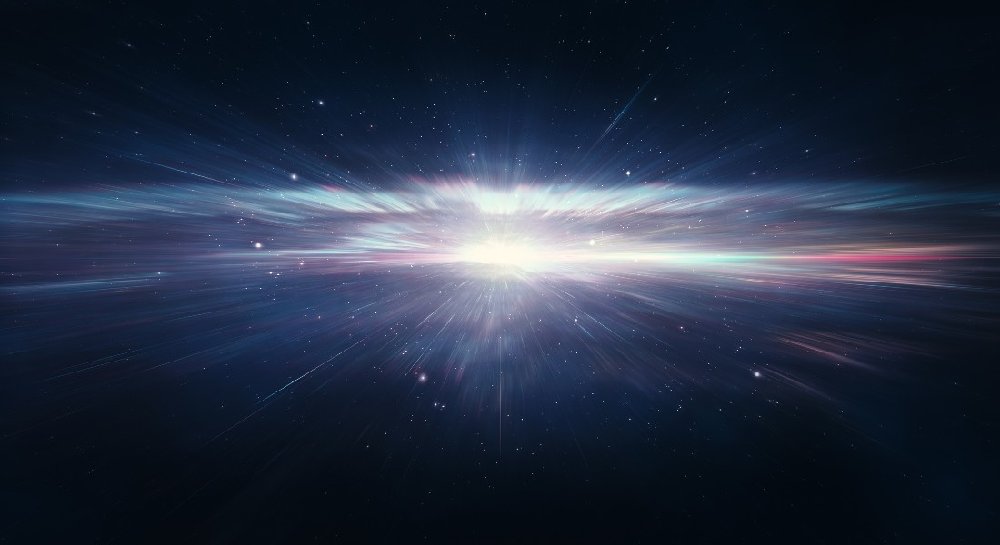
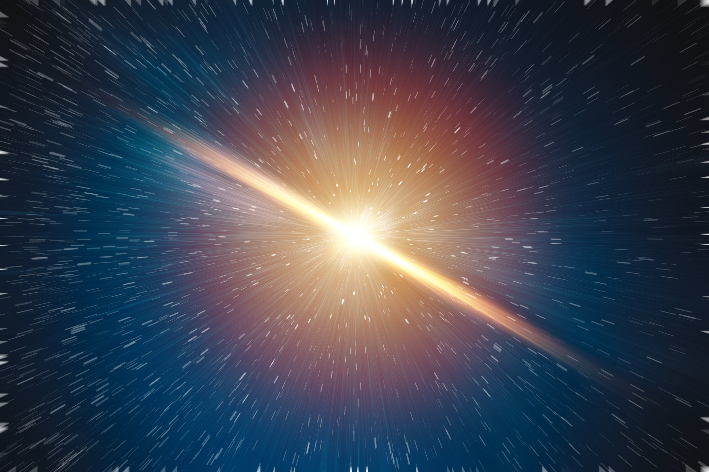
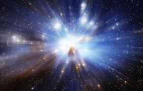

Table Of Contents
Dark Matter
Dark matter is a mysterious substance that makes up most of the matter in the universe. Unlike ordinary matter that we can see and interact with, dark matter does not emit, absorb, or reflect light, making it invisible to our telescopes. Scientists know about the existence of dark matter through its gravitational effects on visible matter and on the structure of the universe. The term “dark matter” might sound scary, but it is not necessarily harmful or dangerous. In fact, dark matter plays an essential role in the universe by helping to hold galaxies together and influencing the evolution of the cosmos. Without dark matter, galaxies would not have enough gravity to stay intact and rotate as fast as they do. Despite the vital role that dark matter plays in the universe, we still know very little about what it actually is. Scientists have proposed several theories to explain the nature of dark matter, but none have been conclusively proven. It remains one of the most significant unsolved mysteries of space.
Cosmic Microwave Background Radiation
Cosmic Microwave Background Radiation (CMBR) is the afterglow of the Big Bang, which is the event that created the universe. It is a type of radiation that is present everywhere in the universe, and it can be detected as a faint signal of microwave radiation. The CMB is one of the most important pieces of evidence for the Big Bang theory and it has helped scientists to understand the early universe. The radiation was emitted when the universe was only 380,000 years old, and it has been traveling through space ever since. By studying the CMB, scientists can learn about the properties of the universe, such as its age, composition, and geometry. The CMB has also helped to confirm the existence of dark matter and dark energy, which are two mysterious and invisible substances that make up most of the universe. Overall, the CMB is a crucial part of our understanding of the universe and the history of its formation.
Formation Of Elements
The formation of elements is a fundamental process in the evolution of the universe. It all started with the Big Bang, which marked the beginning of the universe around 13.8 billion years ago. During the first few minutes after the Big Bang, the universe was extremely hot and dense. At this point, only the simplest elements such as hydrogen, helium, and traces of lithium could form.
Hydrogen
Hydrogen, the most abundant element in the universe, was formed in the early universe after the Big Bang. The intense heat and pressure of the expanding universe caused the subatomic particles to combine and form the first nuclei of hydrogen.
Helium
Helium is the second most abundant element in the universe after hydrogen, and it is formed through the process of nuclear fusion. The fusion of two hydrogen atoms under extreme temperatures and pressures results in the formation of a helium atom.
Lithium
The formation of lithium occurs through a process known as Big Bang nucleosynthesis, in which atomic nuclei are produced through a series of fusion reactions between protons and neutrons in the high-temperature and high-density environment of the early universe.
Timeline Of The Universe
- 13.8 billion years ago: The Big Bang, which marks the beginning of the universe as we know it.
- 380,000 years after the Big Bang: The Universe cools down enough for atoms to form, and cosmic microwave background radiation is emitted.
- 1 billion years after the Big Bang: First galaxies form.
- 9 billion years after the Big Bang: Our Solar System begins to form.
- 13.5 billion years after the Big Bang: The Milky Way galaxy forms.
- 13.8 billion years after the Big Bang: The present day.
Gallery
Here Are Some Pictures Of What Scientists Think The Big Bang Looked Like.
 |
 |  |  |